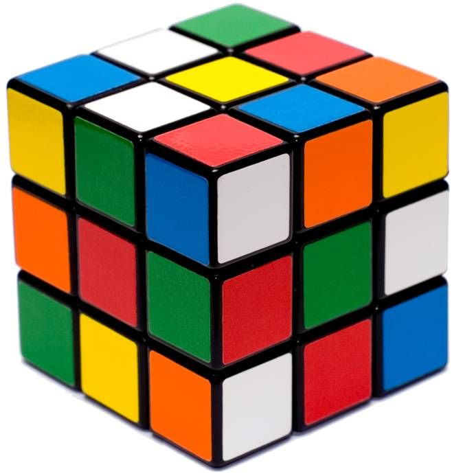
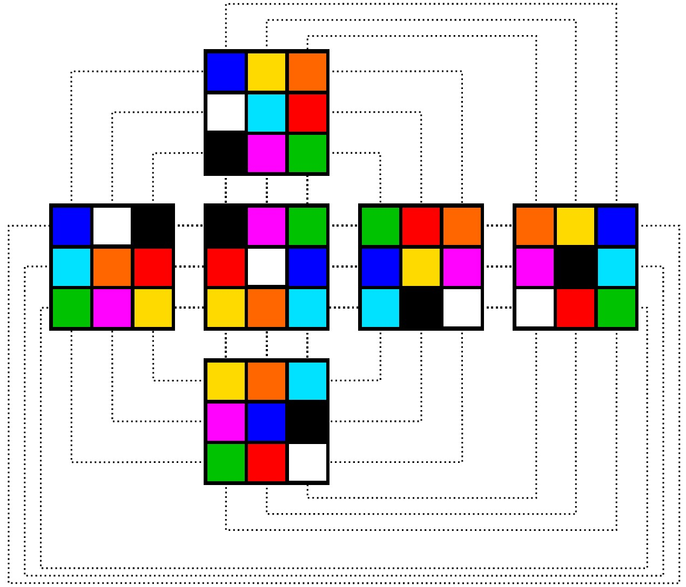
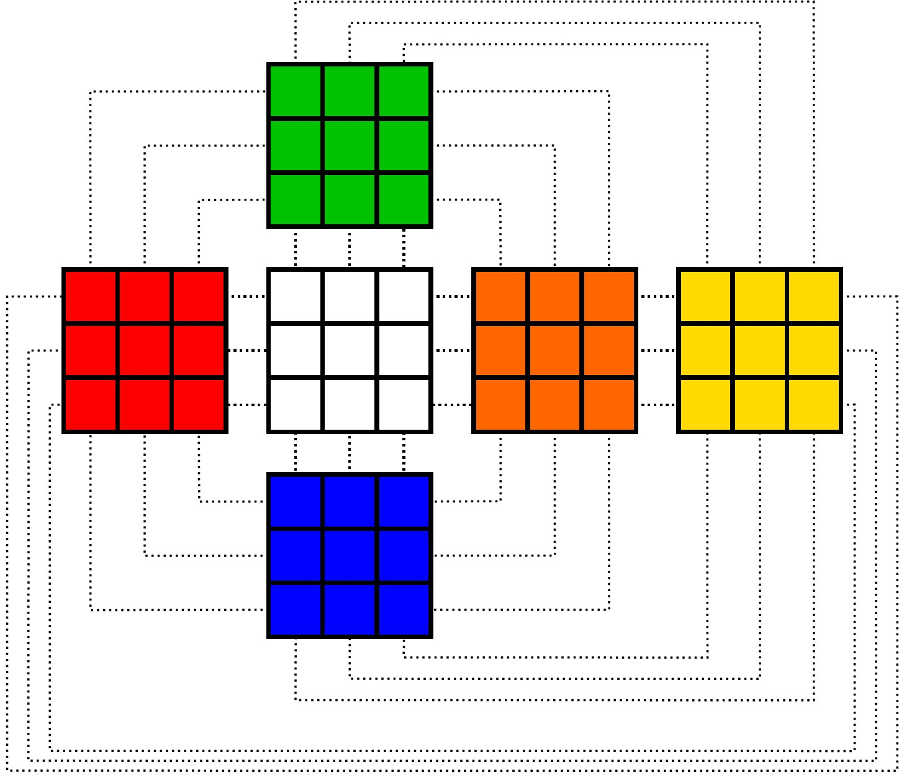
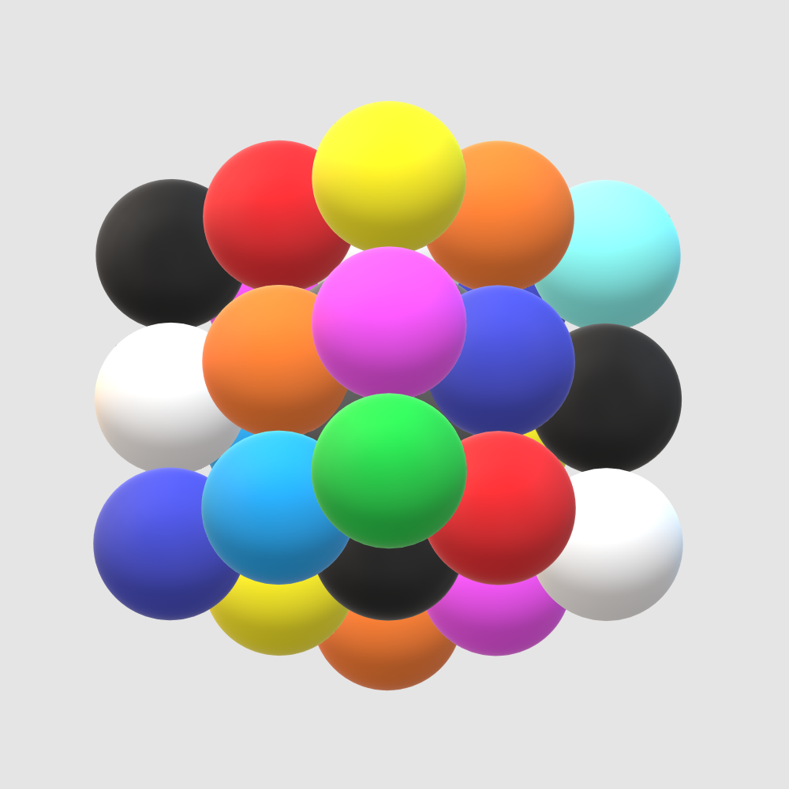

Solving the Molecube by Reduction
My sister-in-law surprised me with a Molecube for Christmas, which combines the logic of a Sudoku puzzle with the mechanics of a Rubik’s cube. Each ball on the Molecube is one of nine colors, and the goal is to reconfigure a shuffled Molecube so each of its faces has all nine colors on it.

It turns out that solving the Molecube is a wonderful exercise in what computer scientists call reduction, which involves transforming a problem we don’t know how to solve into one that we do, solving that version, and then translating the solution back into the original problem. In this post, I’ll give a reader-friendly primer on reduction, outline a reduction from the Molecube to the Rubik’s cube, and then wrap up by solving the Molecube with a standard Rubik’s cube algorithm.
If you’re interested in solving the Molecube yourself (and perhaps you’re here looking for hints), I’ve created a worksheet you can use and will point out when you should skip ahead in the post so as to avoid spoiling this delightful puzzle.
Reduction: There and Back Again
Say we have a problem $A$ that we don’t know how to solve and another problem $B$ that we do know how to solve. Said another way, we have an “algorithm” that can answer any question asked in the form of problem $B$, but we have no such algorithm for problem $A$ questions. The whole idea of reduction is to:
- Take a problem $A$ question (which we don’t know how to answer) and “transform” it into a problem $B$ question (which we do know how to answer).
- Use the “algorithm” for problem $B$ questions to get an answer for our transformed problem $A$ question.
- Translate the algorithm’s answer back into the context of problem $A$.
That’s it. We use a known algorithm (for problem $B$) as our workhorse for a new and unknown problem (problem $A$), and out pop solutions for our unknown problem! This powerful technique underlies almost all of theoretical computer science, giving us a tool to relate difficult problems to one another (as opposed to treating every new problem as something totally unique). I recently heard a high-profile professor in Computer Science claim that reduction is one of only two truly new ideas our discipline has ever contributed to science (though she called this idea “hierarchy”, with the other idea being “abstraction”).
A natural question to ask next would be if all problems can be tackled with reduction. Unfortunately, in practice, finding the right translation between a pair of problems (Step 1, above) can be prohibitively difficult. Reduction is easiest when the two problems seem to have an obvious relationship we can exploit, which brings us to the Molecube and the Rubik’s cube.
A Sudoku-Like Transformation
It’s difficult to overstate how much of the Molecube’s solution is given away in its advertising as “Sudoku + Rubik’s cube”. My solution will treat this equation quite literally, starting with a transformation that relies on a Sudoku puzzle. I found this transformation by asking two simple questions:
- How are the Molecube and the Rubik’s cube similar?
- They’re both 3x3x3 cubes, meaning they both have 6 faces, 8 corners, and 12 edges. This totals 26 balls (on the Molecube) or blocks (on the Rubik’s cube).
- Their physical mechanics (spinning, twisting, etc.) are identical.
- Their goals are, in a way, also identical: from a shuffled configuration, reach a goal configuration.
- How are the Molecube and the Rubik’s cube different?
- Their goal configurations are different: the Molecube wants one ball of each color on each face, while the Rubik’s cube wants each face to be all the same color.
- There are nine colors on the Molecube, but only six on the Rubik’s cube.
- A block on the Rubik’s cube has 1–3 colors (one for each face it touches), while a ball on the Molecube is the same color on all “sides”.
The similarities hint at a solution: though the goal configurations are different, the cubes' structures and mechanics are the same. So if I find a goal configuration for the Molecube, I can use the Rubik’s cube algorithm to handle all the tricky rearranging involved in actually getting there.
If that’s enough of a framework for you to attempt your own solution, feel free to download the worksheet I’ve created to help you visualize the Molecube as a Sudoku puzzle (with colors instead of numbers). You’ll want to stop reading here and come back once you’ve completed a goal configuration or if you’re stuck and need hints.
Speaking of hints, the best way to unlock this tricky Sudoku-like color puzzle (getting one color on each face) is to study the Molecube’s colors and structure. I asked myself the following questions (which culminated in the table at the top of the worksheet):
- How does the Molecube fit nine colors on a cube with 26 balls?
- How are the colors distributed over the different types of balls (centers, corners, and edges)?
- Are there any patterns that appear when trying to place balls of a certain color so it appears on each face exactly once?
The answers to these questions are revealing. There are three balls of each color, with the important exception of Green, which only has two. Further, Green is the unique color that is on two corners. Red and Purple are each on three edges, and the remaining six colors (White, Black, Orange, Yellow, Light Blue, and Blue) are each on one center, one corner, and one edge. This information — after some careful thinking — reveals the patterns we need:
- As in the Rubik’s cube, centers opposite one another are always opposite one another (i.e., Black is always opposite White, Orange is always opposite Yellow, and Blue is always opposite Light Blue).
- The only way the two Green corners avoid being on the same face is if they’re opposite one another (e.g., upper-right-back and lower-left-front).
- The only way the three Red (or Purple) edges avoid being on the same face is if a Red (or Purple) appears exactly once in each “middle band” (shown below, left). So each middle band contains exactly one Red and one Purple.
- For any of the remaining colors, (e.g., Blue) there is a center of that color. This blocks the corner of that color from being in the same “layer”, so the corner must go in the layer opposite the center (shown below, right). Once the position of the corner is fixed, there is only one position the edge of that color can go.
Using these rules and some trial and error, I found the solution shown below, also detailed in the worksheet solution. (An interesting aside: I don’t know if this is the only solution, but any solution works for the reduction). To relate the Molecube solution to the Rubik’s cube solution, we simply treat each 3×3 face on the Molecube as a “color” on the Rubik’s cube. (For example, the Black ball at the top-left of the White-center face becomes the Red-White-Green block on the Rubik’s cube). This completes the transformation step of the reduction.
 Rubik-ing the Molecube
With the difficult transformation step out of the way, the rest of the reduction is easy. You can solve any shuffled Molecube just like you would a Rubik’s cube (assuming you know how to do that), but instead of aiming to have faces with all the same color, you aim to build the goal configuration we got from the transformation (above, left). To make this easier for me to visualize, I made a 3D rendering of my solution (front view on the left, back view on the right).
I was pleasantly surprised at how much Rubik’s cube muscle memory I still had from speedcubing in junior high (though if you need a refresher, I found this tutorial helpful). Interestingly, some of the steps in the Rubik’s cube “algorithm” are unnecessary for the Molecube. Remember the earlier observation that the Molecube’s balls are each a single color while the Rubik’s cube blocks can have 1–3 colors each? This means that the Molecube doesn’t care if its balls are rotated “in place”, though this is a problem for the Rubik’s cube (see the example below). So any steps in the Rubik’s cube algorithm that are meant to fix things like this can be skipped entirely.

But Does It Work?
To show that the reduction approach not only works but is also reasonably fast, here’s me solving the Molecube in just under 2 minutes.
There are a lot of Rubik’s cube-inspired puzzles these days (for example, the Ghost Cube and the Pyraminx). But solving the Molecube by reduction makes me wonder just how many of these new puzzles share a similar relationship to the original Rubik’s cube. If these relationships exist, we’d find that these new puzzles aren’t really new at all; they’re just an old puzzle we know how to solve, but with new names and nice packaging.
Joshua J. Daymude
PhD, Computer Science
I am a Christian and postdoc in computer science studying collective emergent behavior and programmable matter through the lens of distributed computing, stochastic processes, and bio-inspired algorithms. I also love gaming and playing music.